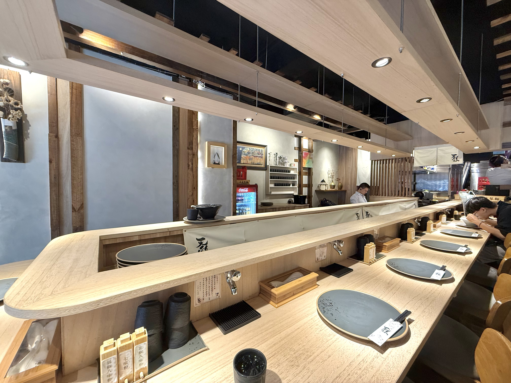
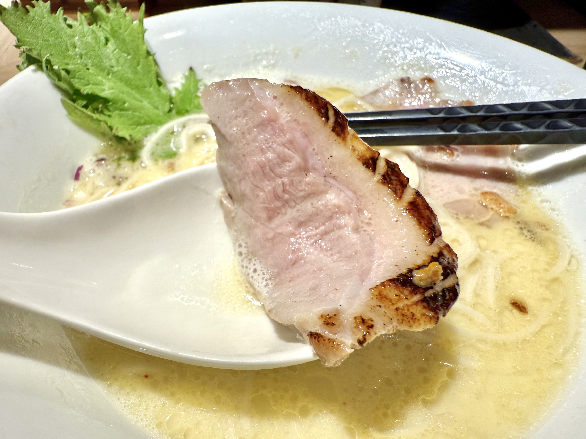

天雞麵屋坊是知名拉麵店「隱家」旗下的新品牌，去年在拉麵熱區中山站附近的巷弄開始營業。看店名就能猜出，天雞麵屋坊以雞湯拉麵為主，有濃湯也有清湯，口味選擇還算多，其中柚香慕斯雞白湯拉麵是店家主推的品項。
天雞麵屋坊店內環境相當明亮舒適，大約能容下20個客人，平日中午前往無須排隊即可入座。入座前要先在門口跟店員點餐、選麵條軟硬度，點完餐後，店員會貼心地詢問水要不要加冰塊，服務周到。
這是我第二次來天雞麵屋坊，第一次點的是柚香慕斯雞白湯拉麵，吃完發現柚子的香味太重，完全搶過雞湯的味道，所以這次點的是更安全牌的雞辣醬白湯拉麵。天雞的濃湯表面有一層泡沫，順口好喝，而它的辣醬是用小碟裝著，可以隨自己接受的辣度，用筷子加入湯中，個人是覺得沒有很辣。而它的叉燒應該是這碗麵最厲害的部分，特別是鴨肉叉燒，至於拉麵麵體就中規中矩，可能是因為屬於連鎖體系，口感不會差，但也就那樣。
有時候沒特色也不是缺點，很多特別的品項我個人也吃不太懂，反而大眾的口味才能讓更多人接受，自然可以穩定引來一定的客源，如果剛好經過中山站，不想去那些排隊的拉麵名店，可以給它一次機會。